{{HTTPSidebar}}
HTTP has a concept of conditional requests, where the result, and even the success of a request, can be changed by comparing the affected resources with the value of a validator. Such requests can be useful to validate the content of a cache, and sparing a useless control, to verify the integrity of a document, like when resuming a download, or when preventing to lose updates when uploading or modifying a document on the server.
HTTP conditional requests are requests that are executed differently, depending on the value of specific headers. These headers define a precondition, and the result of the request will be different if the precondition is matched or not.
The different behaviors are defined by the method of the request used, and by the set of headers used for a precondition:
All conditional headers try to check if the resource stored on the server matches a specific version. To achieve this, the conditional requests need to indicate the version of the resource. As comparing the whole resource byte to byte is impracticable, and not always what is wanted, the request transmits a value describing the version. Such values are called validators, and are of two kinds:
Comparing versions of the same resource is a bit tricky: depending on the context, there are two kinds of equality checks:
The kind of validation is independent of the validator used. Both {{HTTPHeader("Last-Modified")}} and {{HTTPHeader("ETag")}} allow both types of validation, though the complexity to implement it on the server side may vary. HTTP uses strong validation by default, and it specifies when weak validation can be used.
Strong validation consists of guaranteeing that the resource is, byte to byte, identical to the one it is compared too. This is mandatory for some conditional headers, and the default for the others. Strong validation is very strict and may be difficult to guarantee at the server level, but it does guarantee no data loss at any time, sometimes at the expense of performance.
It is quite difficult to have a unique identifier for strong validation with {{HTTPHeader("Last-Modified")}}. Often this is done using an {{HTTPHeader("ETag")}} with the MD5 hash of the resource (or a derivative).
Weak validation differs from strong validation, as it considers two versions of the document as identical if the content is equivalent. For example, a page that would differ from another only by a different date in its footer, or different advertising, would be considered identical to the other with weak validation. These same two versions are considered different when using strong validation. Building a system of etags that creates weak validation may be complex, as it involves knowing the importance of the different elements of a page, but is very useful towards optimizing cache performance.
Several HTTP headers, called conditional headers, lead to conditional requests. These are:
'W/', it performs a strong validation.'W/', it performs a strong validation.Partial Content response, a {{HTTPStatus("200")}} OK is sent with the complete resource.The most common use case for conditional requests is updating a cache. With an empty cache, or without a cache, the requested resource is sent back with a status of {{HTTPStatus("200")}} OK.
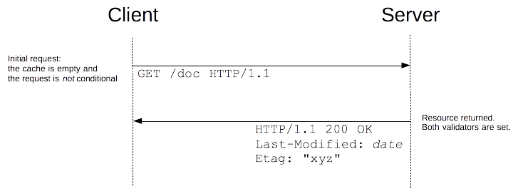
Together with the resource, the validators are sent in the headers. In this example, both {{HTTPHeader("Last-Modified")}} and {{HTTPHeader("ETag")}} are sent, but it could equally have been only one of them. These validators are cached with the resource (like all headers) and will be used to craft conditional requests, once the cache becomes stale.
As long as the cache is not stale, no requests are issued at all. But once it has become stale, this is mostly controlled by the {{HTTPHeader("Cache-Control")}} header, the client doesn't use the cached value directly but issues a conditional request. The value of the validator is used as a parameter of the {{HTTPHeader("If-Modified-Since")}} and {{HTTPHeader("If-Match")}} headers.
If the resource has not changed, the server sends back a {{HTTPStatus("304")}} Not Modified response. This makes the cache fresh again, and the client uses the cached resource. Although there is a response/request round-trip that consumes some resources, this is more efficient than to transmit the whole resource over the wire again.
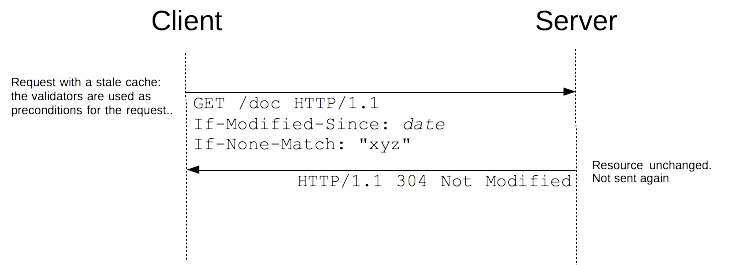
If the resource has changed, the server just sends back a {{HTTPStatus("200")}} OK response, with the new version of the resource, like if the request wasn't conditional and the client uses this new resource (and caches it).
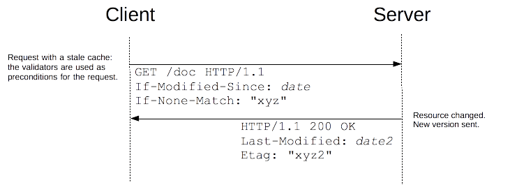
Besides the setting of the validators on the server side, this mechanism is transparent: all browsers manage a cache and send such conditional requests without any special work to be done by Web developers.
Partial downloading of files is a functionality of HTTP that allows to resume previous operations, saving bandwidth and time, by keeping the already obtained information:
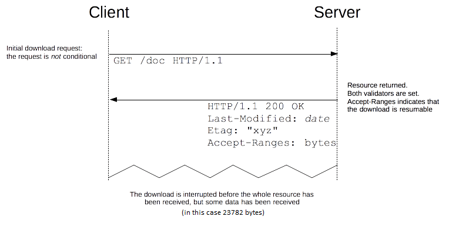
A server supporting partial downloads broadcasts this by sending the {{HTTPHeader("Accept-Ranges")}} header. Once this happens, the client can resume a download by sending a {{HTTPHeader("Ranges")}} header with the missing ranges:
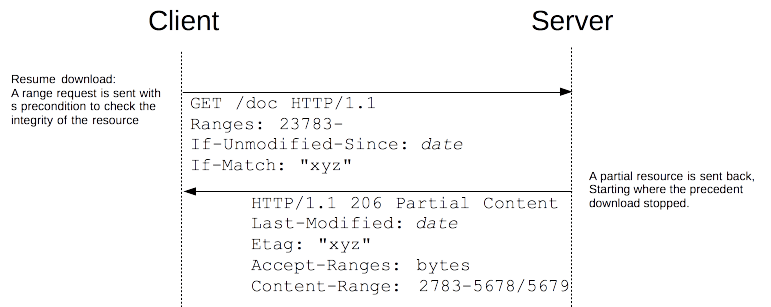
The principle is simple, but there is one potential problem: if the downloaded resource has been modified between both downloads, the obtained ranges will correspond to two different versions of the resource, and the final document will be corrupted.
To prevent this, conditional requests are used. For ranges, there are two ways of doing this. The more flexible one makes use of {{HTTPHeader("If-Unmodified-Since")}} and {{HTTPHeader("If-Match")}} and the server returns an error if the precondition fails; the client then restarts the download from the beginning:
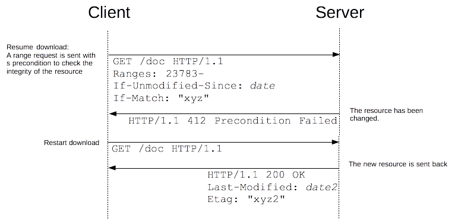
Even if this method works, it adds an extra response/request exchange when the document has been changed. This impairs performance, and HTTP has a specific header to avoid this scenario: {{HTTPHeader("If-Range")}}:
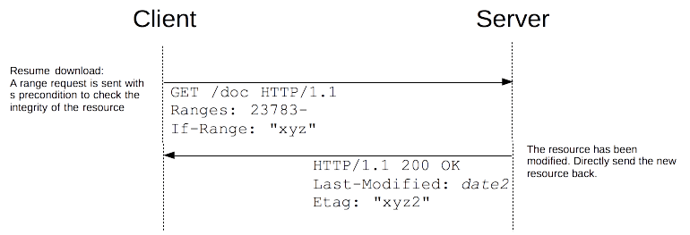
This solution is more efficient, but slightly less flexible, as only one etag can be used in the condition. Rarely is such additional flexibility needed.
A common operation in Web applications is to update a remote document. This is very common in any file system or source control applications, but any application that allows to store remote resources needs such a mechanism. Common Web sites, like wikis and other CMS, have such a need.
With the {{HTTPMethod("PUT")}} method you are able to implement this. The client first reads the original files, modifies them, and finally pushes them to the server:
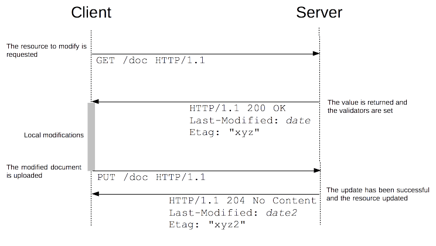
Unfortunately, things get a little inaccurate as soon as we take into account concurrency. While a client is locally modifying its new copy of the resource, a second client can fetch the same resource and do the same on its copy. What happens next is very unfortunate: when they commit back to the server, the modifications from the first client are discarded by the next client push, as this second client is unaware of the first client's changes to the resource. The decision on who wins, is not communicated to the other party. Which client's changes are to be kept, will vary with the speed they commit; this depends on the performance of the clients, of the server, and even of the human editing the document at the client. The winner will change from one time to the next. This is a {{glossary("race condition")}} and leads to problematic behaviors, which are difficult to detect and to debug:
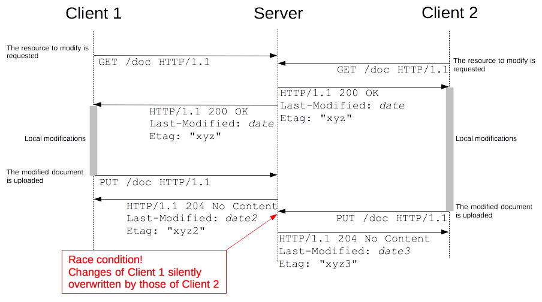
There is no way to deal with this problem without annoying one of the two clients. However, lost updates and race conditions are to be avoided. We want predictable results, and expect that the clients are notified when their changes are rejected.
Conditional requests allow implementing the optimistic locking algorithm (used by most wikis or source control systems). The concept is to allow all clients to get copies of the resource, then let them modify it locally, controlling concurrency by successfully allowing the first client submitting an update. All subsequent updates, based on the now obsolete version of the resource, are rejected:
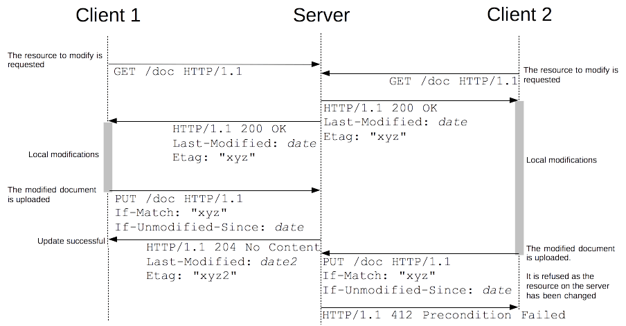
This is implemented using the {{HTTPHeader("If-Match")}} or {{HTTPHeader("If-Unmodified-Since")}} headers. If the etag doesn't match the original file, or if the file has been modified since it has been obtained, the change is rejected with a {{HTTPStatus("412")}} Precondition Failed error. It is then up to the client to deal with the error: either by notifying the user to start again (this time on the newest version), or by showing the user a diff of both versions, helping them decide which changes they wish to keep.
The first upload of a resource is an edge case of the previous. Like any update of a resource, it is subject to a race condition if two clients try to perform at the similar times. To prevent this, conditional requests can be used: by adding {{HTTPHeader("If-None-Match")}} with the special value of '*', representing any etag. The request will succeed, only if the resource didn't exist before:
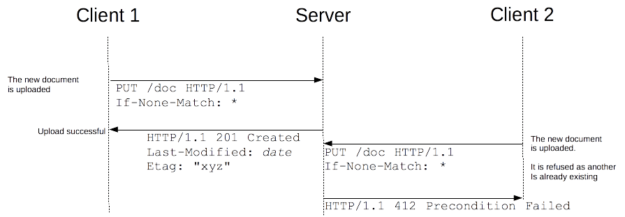
If-None-Match will only work with HTTP/1.1 (and later) compliant servers. If unsure if the server will be compliant, you need first to issue a {{HTTPMethod("HEAD")}} request to the resource to check this.
Conditional requests are a key feature of HTTP, and allow the building of efficient and complex applications. For caching or resuming downloads, the only work required for webmasters is to configure the server correctly; setting correct etags in some environments can be tricky. Once achieved, the browser will serve the expected conditional requests.
For locking mechanisms, it is the opposite: Web developers need to issue a request with the proper headers, while webmasters can mostly rely on the application to carry out the checks for them.
In both cases it's clear, conditional requests are a fundamental feature behind the Web.